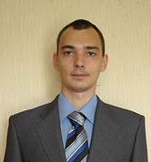

Мужчина, 32 года, родился 9 ноября 1984
Новосибирск, м. Заельцовская, не готов к переезду, готов к редким командировкам
+7 913 9501599 — предпочитаемый способ связи
Занятость: полная занятость, стажировка
График работы: полный день, удаленная работа
|
|
Февраль 2011 — по настоящее время
5 лет 11 месяцев
Название организации: ООО Ангстрем НСК.
Сайт:angstrem-mebel.ru
Розничная сеть (мебель)
Системный администратор
Обслуживание в единственном числе ИТ-инфраструктуры розничной сети на территории Сибири и Урала (~360 машин, NLB кластер из 6 терминальных серверов (windows 2008) в головном офисе).
- Обеспечение работоспособности рабочих станций (360 ПК).
- Организация с нуля ИТ-инфраструктуры в других городах (заключение договоров связи и закупки оборудования, установка, наладка, обучение пользователей).
- Обеспечение работоспособности интернета, эл. почты.
- Поддержка офисной мини-ip-АТС Asterisk (CentOS).
- Удалённое администрирование (RAdmin, TeamViewer, Ammyy Admin).
- Ввод в эксплуатацию, развёртывание (монтаж на рабочем месте) и настройка рабочих станций.
- Ремонт компьютеров и оргтехники.
- Администрирование локальной сети и обеспечение безопасности сети.
- Работа с серверами на базе MS Windows 2008 (NLB кластер из 6 терминальных серверов в головном офисе).
- Установка и настройка ПО.
- Установка и настройка файервол и антивирусных приложений (Nod32, KAV).
- Резервное копирование баз данных внутренней информации (Acronis).
|
|
Ноябрь 2008 — Январь 2010
1 год 3 месяца
ФУГП НМСЦ «Почта России» - Федеральное государственное унитарное предприятие
Новосибирск,
Сайт:nmsc.ru
Системный администратор.
- Обеспечение работоспособности рабочих станций (120 ПК);
- Обеспечение работоспособности почтово-кассовых терминалов;
- Настройка, обеспечение работоспособности и облуживание POS-терминалов (16 шт.);
- Обеспечение работоспособности интернета, эл. почты, IP-телефонии;
- Установка пассивного оборудования (D-Link) и настройка активного сетевого оборудования (Cisco);
- Удалённое администрирование (RAdmin, TeamViewer, Ammyy Admin);
- Ввод в эксплуатацию, развёртывание (монтаж на рабочем месте) и настройка рабочих станций;
- Мелкий ремонт компьютеров и оргтехники;
- Администрирование локальной сети и обеспечение безопасности сети;
- Администрирование серверов на базе MS Windows 2003 (8шт.);
- Установка и настройка ПО (операционные системы (Windows Server 2003 и 2008/XP), офисные, специализированное ПО);
- Установка и настройка файервол и антивирусных приложений (Nod32, KAV);
- Резервное копирование баз данных внутренней информации (Acronis).
|
|
Март 2008 — Ноябрь 2008
9 месяцев
Компания «Эврика»
Интернет-магазин
Должность:Системный администратор.
- Поддержка локальных сетей 3-х фирм,в сумме 35 рабочих мест(windows xp) и 3 сервера(windows 2000\2003)
|
Июнь 2007 — Февраль 2008
9 месяцев
ООО «Универсал-НТВ» (СИТИХОУМНЕТ)
Сайт:http://citynsk.ru
Должность:Монтажник сети
Обязанности:монтаж сети передачи данных(СПД)‚ систем приема эфирного и спутникового телевидения
|
|
Апрель 2006—Апрель 2007
1 год 1 месяц
Кадровый Центр «Карьера»
Должность:Cистемный администратор
Поддержание 12 рабочих мест и 1 сервера (windows 2000)
|
Знание языков
Русский — родной.
Английский — базовые знания
Немецкий — базовые знания
Гражданство, время в пути до работы
Гражданство: Россия
Разрешение на работу: Россия
Желательное время в пути до работы: Не более часа
.
.
.
.
.
.